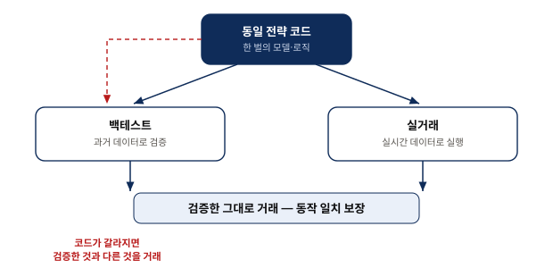
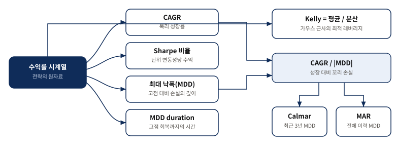
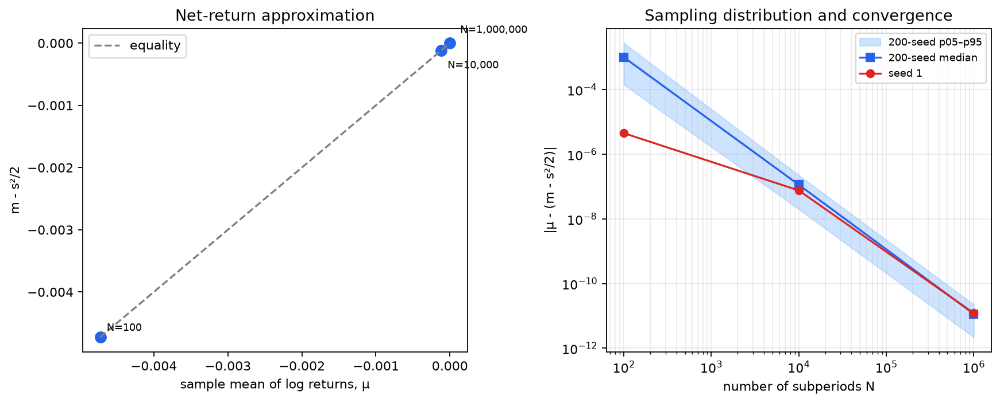
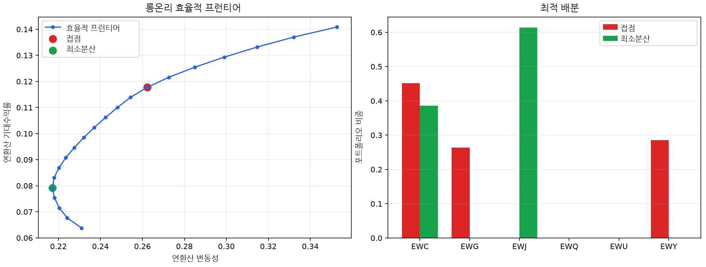
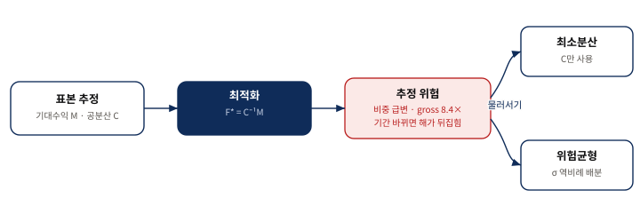

알고리즘 트레이딩의 기초
검증 가능한 데이터에서 견고한 자본 배분까지
0. 핵심 요약
『Machine Trading』 1장은 개별 전략보다 앞선 공통 기반을 다룬다. 시장 데이터가 실제 거래 가능했는지, 백테스트와 실거래가 같은 코드를 쓰는지, 브로커 실패와 결제 위험의 경계가 어디인지, 성과를 어떤 위험 단위로 재야 하는지, 그리고 기대수익과 공분산으로 얻은 최적 배분을 왜 그대로 믿을 수 없는지를 한 흐름으로 연결한다.
| 단계 | 먼저 물을 질문 | 실무 판정 |
|---|---|---|
| 데이터 | 그 시점에 알고 실제로 거래할 수 있었나? | point-in-time 구성과 실행 가능한 가격을 우선한다. |
| 일치 | 검증한 로직과 주문을 낸 로직이 같은가? | 동일 프로그램 또는 독립 구현 간 교차 대조가 필요하다. |
| 측정 | 수익은 어떤 위험을 감수한 결과인가? | CAGR·Sharpe·MDD·낙폭 기간·Calmar를 함께 읽는다. |
| 배분 | 최적해의 입력값을 얼마나 믿을 수 있나? | 기대수익 추정이 불안정하면 최소분산·위험균형으로 물러선다. |
복리 성장·Sharpe·Kelly 해가 같은 방향을 가리킨다는 결론은 로그수익률의 가우스 근사, 기대수익·공분산 입력, 무위험수익률 0 근사, 비례 레버리지와 제약 조건 아래에서 읽어야 한다. 현실의 꼬리위험과 추정 오차는 별도의 판단 대상이다.
교재가 남기는 두 층위의 판단
장의 원전 요약은 알고리즘 트레이딩을 보편적인 인프라 문제와 전략마다 달라지는 판단 문제로 나눈다. 신뢰할 만한 과거·실시간 데이터, 연구와 실행의 프로그램 일치, 안전성과 비용을 함께 본 브로커 선택은 어떤 전략에도 필요한 기반이다. 반면 어떤 성과 지표와 레버리지를 감내할지, 어떤 포트폴리오 배분을 쓸지는 전략의 수익 분포와 투자자의 위험 선호에 달려 있다.
가우스 근사와 동일한 입력·제약 아래에서 장기 복리 성장과 Sharpe를 최대화하는 방향은 Kelly 배분 $F^*=C^{-1}M$으로 만난다. 그러나 실제 선택에서는 최대 낙폭, 추정 오차, 공매도·레버리지 제약을 다시 통과해야 한다.
1. 거래 가능한 데이터가 검증의 출발점이다
들어가며 — 알고리즘 트레이딩을 한눈에
알고리즘 트레이딩은 시장 데이터 → 전략 프로그램 → API 주문 → 브로커 체결 → 주문 상태 수신의 순환이다. 저자가 그림 1.1에서 백테스트와 실시간 실행을 하나의 프로그램 상자로 묶은 이유는, 과거에 검증한 논리가 실전 주문에서도 글자 그대로 유지되어야 하기 때문이다.
과거 시장 데이터 — 전략을 검증할 재료를 어디서 구하는가
생존 편향은 상장폐지 종목을 빼서 승자만 남기고, 미래 정보 편향은 그 시점에는 알 수 없던 수정치·구성종목·롤오버 정보를 과거에 끼워 넣는다. 상장폐지 이력만 갖는 것도 충분하지 않다. 예컨대 SPX 종목 선택 전략에는 당시의 지수 구성종목이 필요하다. 선물은 원계약과 연속계약 구성 규칙을 구분하고, 옵션은 거래가 드문 마지막 체결가보다 장마감 호가와 내재변동성 곡면의 산출 방식을 확인해야 한다.
| 영역 | 대표 함정 | 감사 질문 |
|---|---|---|
| 주식·지수 | 상장폐지·과거 구성종목 누락 | 해당 날짜에 투자 가능했던 전체 유니버스인가? |
| 선물 | 연속계약 롤 규칙의 미래 정보 | 원계약과 롤 규칙을 분리·고정했는가? |
| 옵션 | 드문 마지막 체결가·보간된 곡면 | 당시 BBO와 곡면 생성 규칙을 보존했는가? |
| 펀더멘털·뉴스 | 발표·수정·수집 시각 혼동 | 시장 참여자가 실제로 받은 시각을 반영했는가? |
종가도 “하나의 숫자”가 아니다
- 1순위 · 주 거래소 경매가 — 그 시각에 주문을 모아 실제 체결 가능한 단일 가격이다.
- 2순위 · BBO 중간가격 — 경매가가 없을 때 당시 최우선 매수·매도 호가로 실행 가능성을 근사한다.
- 주의 · 통합 마지막 체결가 — 어느 거래소의 우연한 마지막 거래일 수 있어 실제 매매 가능성을 보장하지 않는다.
2017년 교재 스냅샷: CSI, Quandl, CRSP/WRDS, Bloomberg, ORATS, OptionMetrics, QuantGo 등 공급업체 언급은 당시의 제품·가격·가용성 사례다. 현재 구매 추천이 아니라 데이터 유형과 감사 기준을 읽는 자료로 사용한다.
실시간 시장 데이터 — 지연시간이 곧 비용이 되는 세계
지연시간은 시장 사건이 전략 프로그램에 도착하기까지의 시간이다. 일간 전략은 브로커 피드로 충분할 수 있지만, 장중 전략은 피드 지연·처리 지연·주문 왕복·체결 지연을 나눠 예산화해야 한다. 교재가 든 25ms·10ms와 공급업체 목록은 2017년 예시이므로 절대 기준이 아니다. 전략의 알파 반감기보다 전체 데이터·주문 경로가 충분히 짧은가가 판단 기준이다.
백테스팅과 트레이딩 플랫폼 — 검증한 것과 거래하는 것을 어떻게 일치시키는가
연구 코드와 실행 코드가 갈라지면 동일한 전략이라는 보장이 사라진다. 가장 직접적인 해법은 같은 프로그램이 과거 데이터와 실시간 데이터를 번갈아 받게 하는 것이다. 성능 때문에 별도 구현이 필요하다면, 저자의 회사처럼 다른 사람·다른 언어의 결과를 주문·포지션·손익 단위로 대조해 독립 재구축을 검증 장치로 바꿔야 한다.

발표자 재구성. 붉은 경로는 결과 대조 없이 코드가 갈라지는 실패 모드다.| 특징 | MATLAB | R | Python |
|---|---|---|---|
| 사용 용이성 | 1 | 2 | 2 |
| IDE 완성도 | 1 | 3 | 1 |
| 속도 | 1 | 3 | 2 |
| 툴박스 | 2 | 1 | 1 |
| C/C++로의 컴파일 | 1 | N/A | 1 |
| 브로커와의 연결성 | 1 | 2 | 2 |
| 고객 지원 | 1 | N/A | N/A |
| 가격 | 2 | 1 | 1 |
2017년 저자 개인 평가: 이 표의 언어·IDE·가격·브로커 어댑터 평가는 현재 제품 비교가 아니다. 오늘의 선택은 지원되는 데이터·실거래 경로·재현 가능한 환경·성능 병목을 새로 측정해야 한다. 표에서 남는 원칙은 REPL의 연구 속도와 컴파일 실행계의 견고성 사이를 교차 대조로 연결하는 것이다.
- 같은 입력 시계열과 거래 캘린더를 고정한다.
- 신호·목표 포지션·주문·체결·비용을 단계별로 대조한다.
- 허용 오차와 실패 시 실거래 차단 조건을 자동화한다.
브로커 — 수수료보다 중요한 것은 안전성이다
표면 수수료만 비교하면 숨은 비용과 파산 경계를 놓친다. 주문 흐름 대가와 넓힌 FX 스프레드는 체결가에 비용을 숨길 수 있다. 더 중요한 것은 계좌의 법적 성격이다. 증권계좌의 SIPC 보호, 선물 FCM의 고객자금 분리, FX 거래의 PvP 결제는 서로 다른 장치이며 하나가 다른 영역을 대신하지 않는다.
| 영역 | 보는 것 | 보장하지 않는 것 |
|---|---|---|
| 증권계좌 | 회원 브로커 파산 시 SIPC 고객자산 복원 한도 | 시장 손실·나쁜 투자·상품선물 계좌 |
| 선물 FCM | 고객자금 분리와 파산 시 고객 우선 규칙 | 보험처럼 원금 전액을 확정 보상하는 것 |
| 체결 | 주문 경로·슬리피지·스프레드·리베이트 | “수수료 0”이 최저 총비용이라는 것 |
| FX 결제 | CLSSettlement 대상 통화·거래의 PvP 여부 | 모든 통화·모든 거래의 보편적 위험 제거 |
현재 SIPC는 회원 브로커 실패 시 고객당 최대 $500,000(현금 한도 $250,000)을 다루며 상품·선물은 보호하지 않는다고 설명한다. CFTC는 FCM 고객자금 분리와 파산 우선권을 규정하지만 부족분이 생기면 비례 배분될 수 있음을 밝힌다. CLS는 18개 통화를 다루며, 적격 FX 거래의 두 통화 지급을 PvP로 동기화해 결제 위험을 줄인다.
SIPC · Introduction · CFTC · FCM customer fund segregation · CLSSettlement · PvP settlement
헤르슈타트 위험은 시차가 있는 FX 결제에서 한쪽 통화를 이미 지급한 뒤 상대 은행이 파산해 반대 통화를 못 받는 위험이다. 저자는 1974년 Bankhaus Herstatt 사례와 이후의 PvP 결제 필요성을 연결한다. 선물 고객자금 분리의 한계에는 MF Global·PFGBest 파산을, 레버리지와 음수 계좌 위험에는 2015-01-15 SNB의 EUR/CHF 환율 하한 철회 뒤 수초 내 약 −10%, 하루 약 −29% 급변과 일부 브로커 실패를 사례로 든다. 모두 2017년 교재의 역사 서술이며 현재 보호 범위는 위 공식 자료로 별도 확인했다.
레버리지 손실로 계좌가 마이너스가 되면 개인은 추가 납입 책임을 질 수 있다. 교재는 LLC·LP 같은 유한책임 기구를 경계 사례로 들지만, 이는 관할권·계약·보증에 따라 달라지는 법률 문제다. 구조를 만들기 전 현지 전문가의 검토가 필요하며, 이 자료는 법률 자문이 아니다.
성과 지표 — 무엇으로 전략의 좋고 나쁨을 판단하는가
저자가 중시하는 다섯 지표는 CAGR, Sharpe, Calmar, 최대 낙폭(MDD), 최대 낙폭 지속 기간이다. “얼마나 벌었나”뿐 아니라 얼마나 흔들렸고, 얼마나 깊고 오래 물렸는가를 함께 답해야 한다.
CAGR — 복리로 굴렸을 때의 성장률
하루 1%를 252일 동안 매일 재투자하면 $1.01^{252}-1\approx1127\%$다. 단순 합산 252%와의 차이는 이익을 다시 태우는 복리에서 나온다. 다만 이 결과는 레버리지를 일정하게 유지하도록 포지션을 매일 재조정한다는 가정을 포함한다. 백테스트 기본 비교에서는 레버리지 1을 두고, 손익을 롱·숏 절댓값의 합인 총 시장가치로 나눈다.
켈리 공식 — 최적 레버리지는 어떻게 정하는가
단일 전략의 가우스 근사에서 최적 레버리지는 $f^*=E[r-r_f]/Var(r-r_f)$다. 평균 초과수익이 크고 분산이 작을수록 크게 베팅하라는 뜻이다. 그러나 평균 0.05%, 표준편차 1%가 레버리지 5를 추천해도 하루 −20% 꼬리 사건이면 자기자본이 소멸한다. 저자는 1987-10-19 블랙먼데이의 하루 약 −20% 주가 하락을 그 경계 사례로 든다. 따라서 교재의 실전 권고는 “절반 Kelly” 같은 고정 비율이 아니라 여러 금융위기를 포함한 백테스트의 최대 낙폭을 감내할 수준까지 레버리지를 낮추라는 것이다.
샤프 비율, 최대 낙폭, 그리고 칼마 비율

발표자 재구성. Calmar는 최근 3년 MDD, MAR는 전체 운용기간 MDD를 분모로 쓴다는 교재의 구분을 포함한다.| 지표 | 답하는 질문 | 경계 |
|---|---|---|
| Sharpe | 단위 변동성당 초과수익은? | 가우스·대칭 위험 근사, 꼬리 사건을 축소 |
| MDD | 고점에서 얼마나 깊이 잃었나? | 한 번의 경로에 민감 |
| MDD duration | 고점 회복까지 얼마나 오래 걸렸나? | 깊이와 별개인 인내·유동성 비용 |
| Calmar | 최근 3년 MDD당 CAGR은? | 관측창 3년을 명시해야 함 |
| MAR | 전체 이력 MDD당 CAGR은? | 이력이 길수록 분모가 커질 가능성 |
포트폴리오 최적화 — 자본을 어떻게 나눌 것인가
한 기간 순수익률을 최대화하는 문제와 장기 복리 성장을 최대화하는 문제를 구분하는 데서 출발한다. $F$는 자산·전략 비중 벡터, $M$은 기대 순수익률 벡터, $C$는 순수익률 공분산 행렬이다. 포트폴리오 기대수익은 $F^TM$, 분산은 $F^TCF$다.
순수익률과 로그수익률을 먼저 구분한다
−100% 아래로 갈 수 없어 가우스 분포가 될 수 없다.
기간별 합산이 가능하며 가우스 근사에 쓰인다.
Box 1.1: 순수익률과 로그 수익률의 평균
기호의 방향이 중요하다. $\mu=E[g]$는 평균 로그수익률, $m=E[r]$는 평균 순수익률, $s$는 수익률 표준편차다. 로그수익률 가우스 근사와 짧은 기간에서 다음 관계가 성립한다.
$$\boxed{\mu \approx m-\frac{s^2}{2}}\tag{1.1}$$
$s^2/2$는 변동성 드래그다. +10% 뒤 −10%는 산술평균 0%처럼 보여도 자본은 $1.1\times0.9=0.99$가 된다. 기간을 잘게 나눌수록 이 근사가 정확해진다.
| 하위 기간 $N$ | $m$ | $\mu$ | $s$ | $m-s^2/2$ |
|---|---|---|---|---|
| 100 | $2.00\times10^{-2}$ | $2.99\times10^{-4}$ | $2.00\times10^{-1}$ | $-6.41\times10^{-4}$ |
| 10,000 | $2.24\times10^{-4}$ | $2.30\times10^{-5}$ | $2.00\times10^{-2}$ | $2.28\times10^{-5}$ |
| 1,000,000 | $4.66\times10^{-6}$ | $2.65\times10^{-6}$ | $2.00\times10^{-3}$ | $2.65\times10^{-6}$ |
위 값은 교재에 인쇄된 반올림 출력을 그대로 옮긴 것이다. 인쇄 자릿수로 다시 뺀 오차를 교재의 계산 오차라고 해석하지 않는다.
| 하위 기간 $N$ | $\mu$ | $m-s^2/2$ | 절대오차 |
|---|---|---|---|
| 100 | $-4.72242425\times10^{-3}$ | $-4.72692833\times10^{-3}$ | $4.504\times10^{-6}$ |
| 10,000 | $-1.18258022\times10^{-4}$ | $-1.18334121\times10^{-4}$ | $7.610\times10^{-8}$ |
| 1,000,000 | $5.82003657\times10^{-7}$ | $5.81991499\times10^{-7}$ | $1.216\times10^{-11}$ |

저장소의 재현 스크립트가 고정 난수 설정으로 생성한 감사 산출물이다. 교재의 주장과 재현 결과를 구분해 표시했다.효율적 프런티어 — 위험과 수익의 최적 절충선
목표 기대수익률을 고정한 채 $F^TCF$를 최소화하면 효율적 프런티어가 된다. 원점에서 프런티어에 그은 선의 기울기, 즉 Sharpe가 최대인 점이 접점 포트폴리오다. 이 설명은 무위험수익률을 0으로 둔 교재의 근사를 따른다.

공식 예제 데이터로 AIML Quant가 재현한 감사 산출물. 교재 그림 1.2와 비중을 대조했다.Box 1.2: 이차계획법으로 효율적 프런티어 계산하기
여섯 국가 ETF에 대해 $F\ge0$, $F^T\mathbf1=1$, $F^TM=m_{target}$을 두고 $F^TCF$를 최소화한다. 교재의 롱온리 접점 비중은 EWC 45%, EWG 26%, EWY 29%이고, 최소분산은 EWC 38%, EWJ 60%, EWU 1% 부근이다. 이 숫자는 특정 표본의 결과이지 미래 권고가 아니다.
복리 성장 극대화 = 샤프 비율 극대화 = 켈리 배분
식 1.1을 포트폴리오에 적용하면 기대 복리 성장률은 $G(F)\approx F^TM-\tfrac12F^TCF$다. 입력 $M,C$를 참값처럼 두고 제약 없이 미분하면 $F^*=C^{-1}M$을 얻는다. Sharpe $F^TM/(F^TCF)^{1/2}$는 전체 비중의 상수배에 불변이므로, 레버리지 합을 고정하면 같은 방향을 정규화한 접점 포트폴리오가 된다.
Box 1.3: 포트폴리오의 샤프 비율 최대화
| 해 | 형태 | 읽는 법 |
|---|---|---|
| 무제약 Kelly | $F^*=C^{-1}M$ | 가우스 근사의 기대 복리 성장 최대 크기 |
| Sharpe 최대 | $\dfrac{C^{-1}M}{\mathbf1^TC^{-1}M}$ | 같은 방향을 총비중 1로 정규화 |
| 롱온리 접점 | 수치 최적화 | 음수 비중 금지 때문에 방향이 달라질 수 있음 |
“복리 = Sharpe = Kelly”는 아무 상황에서나 같은 포트폴리오라는 뜻이 아니다. 근사 분포·입력값·무위험수익률·공매도·레버리지·기타 제약을 맞춘 뒤 비례 방향이 같다는 결론이다.
현실의 개입 — 최소분산과 위험균형
가장 불안정한 입력은 기대수익 $M$이다. 과거 수익률이 미래 수익률의 약한 예측치라면 $C^{-1}M$은 입력의 작은 오차를 큰 비중 변화로 증폭한다. 반면 공분산은 상대적으로 추정하기 쉬우므로, $M$을 버리는 최소분산이나 개별 변동성만 쓰는 위험균형으로 단순화할 이유가 생긴다.

붉은 수치·표본 분할 결과는 교재 문장이 아니라 AIML Quant 재현 감사다. 교재의 일반 주장인 기대수익 추정 위험을 시각화한다.| 배분 | 입력 | 얻는 것 | 남는 위험 |
|---|---|---|---|
| $C^{-1}M$ | $M,C$ | 근사 모형의 최대 성장·Sharpe | 평균 추정 오차와 총노출 증폭 |
| 최소분산 | $C$ | 불안정한 $M$ 회피 | 저변동 집중·수익 목표 포기 |
| 위험균형 | 개별 변동성 | 단순하고 분산된 위험 기여 | 상관·꼬리 무시, 동시 청산 전염 |
| MDD 균형 | 낙폭·스트레스 | 꼬리위험을 직접 겨냥 | 표본 경로와 위기 선택에 민감 |
모두가 같은 변동성 목표나 레버리지 규칙을 쓰면 시장 하락 → 변동성 상승 → 동시 매도 → 추가 하락의 피드백이 생길 수 있다. 교재는 2015년 중국 증시·유가 하락기에 약 $70B 규모의 All Weather 계열 펀드가 약 −7%를 기록하고 위험균형 청산이 전염을 키웠다는 당시 논쟁을 역사적 사례로 든다. 특정 원인을 단정하기보다 각자 합리적인 변동성 목표가 군집 행동으로 바뀌는 경로를 읽어야 한다. 저자는 위험균형을 쓰더라도 “변동성은 나쁘다”는 가우스 가정에 머물지 말고, 각 구성요소의 최대 낙폭을 균형화하는 대안을 제안한다.
본문 판단을 지탱하는 주석 1–8
- 주석 1 · 과거 구성종목 — 현재 구성종목이 아니라 해당 날짜의 지수 구성 이력이 생존 편향 없는 전략 검증에 필요하다.
- 주석 2 · IDE — 편집·실행·디버깅을 한 환경에 묶는 통합개발환경을 뜻한다.
- 주석 3 · Python 가속 — Numba·당시 NumbaPro는 Python 수치 계산을 컴파일해 병목을 줄이는 2017년 사례다.
- 주석 4 · REPL — 컴파일 단계를 기다리지 않고 명령을 실행·수정해 연구 반복을 빠르게 한다.
- 주석 5 · SIPC — 교재의 $500,000 증권·현금 합산 한도는 현재 공식 범위와 본문에서 다시 대조했다.
- 주석 6 · 초과 현금 — 기존 선물 포지션의 증거금 요구액을 넘는 현금 잔고를 뜻한다.
- 주석 7 · 무위험수익률 — 평균과 분산은 엄밀히 초과수익률로 계산한다. 교재의 “2008년 이후 0 근사”는 시대적 스냅샷이므로 현재 금리 환경에 자동 적용하지 않는다.
- 주석 8 · 꼬리위험 대안 — VaR와 기대손실(ES)은 변동성만으로 충분하지 않을 때 쓰는 대안이다. 역사적 시뮬레이션 등 비모수 방식은 가우스 가정 없이 계산할 수 있지만, 방법에 따라 분포 가정이 들어갈 수 있다.
연습문제 26개를 네 갈래로 복습하기
원문의 문제를 그대로 복제하지 않고, 각 좌표가 무엇을 점검하는지 학습 과제로 재구성했다. 세부 문항은 참가자용 교재와 함께 사용한다.
API의 역할을 데이터·주문·상태로 설명한다.
Python 연구용 IDE 선택 기준을 정한다.
전략 개발에 필요한 MATLAB 도구를 분류한다.
Python과 R 패키지 상호운용 경로를 확인한다.
교재의 세 언어 성능 비교를 2017 스냅샷으로 읽는다.
계산 병목을 컴파일·확장으로 줄이는 방법을 비교한다.
브로커 API를 추상화하는 플랫폼 조건을 고른다.
동일 프로그램이 제거하는 drift를 설명한다.
SPX 과거 구성종목과 생존 편향의 관계를 판정한다.
경매가·BBO 중간가·통합 종가의 우선순위를 설명한다.
내재변동성 곡면이 관측값과 보간값을 섞는 방식을 설명한다.
REPL이 연구 반복에 유리한 이유를 말한다.
교재의 가격 정보를 현재 사실과 분리한다.
Calmar와 MAR의 관측창 차이를 계산한다.
2002년 이후에도 남는 비-PvP FX 결제 위험을 구분한다.
CLS의 PvP 조건과 적용 범위를 설명한다.
선물 계좌와 SIPC 보호 경계를 구분한다.
유한책임 기구의 목적과 법률 검토 필요성을 말한다.
순수익률이 가우스가 될 수 없는 지지집합 경계를 증명한다.
기하 랜덤워크의 기대 시장가치를 유도한다.
기대 복리 성장률이 평균 로그수익률임을 보인다.
Kelly 배분 공식·목적·포트폴리오 이름을 연결한다.
최소분산이 접점보다 견고할 수 있는 이유를 설명한다.
최소분산과 위험균형이 버리는 입력을 비교한다.
동일한 위험관리 규칙이 전염을 만드는 경로를 그린다.
변동성 위험 측정의 한계와 꼬리위험 대안을 제안한다.
원전 용어와 수식 기호
| 원전 핵심 용어 | 이 장에서의 뜻 |
|---|---|
| 알고리즘 트레이딩 | 프로그램이 시장 데이터를 받아 판단하고 API로 주문을 내는 자동 매매 |
| API | 프로그램과 데이터·브로커 주문계를 잇는 연결 규약 |
| 백테스팅 | 과거 데이터로 전략의 규칙과 성과를 검증하는 과정 |
| 생존 편향 | 사라진 종목을 빼 승자만 남기는 성과 착시 |
| 미래 정보 편향 | 당시에 알 수 없던 정보가 과거 검증에 섞이는 오류 |
| 롤오버 | 만기가 다른 선물 원계약을 연속계약으로 잇는 절차 |
| BBO | 한 시점의 최우선 매수·매도 호가 |
| 내재변동성 곡면 | 여러 행사가·만기의 내재변동성을 보간한 면 |
| 지연시간 | 시장 사건이 전략 프로그램에 도착하기까지의 시간 |
| REPL 언어 | 컴파일 대기 없이 실행·수정하며 연구할 수 있는 환경 |
| 주문 흐름 대가 | 브로커가 주문을 특정 체결처로 보내고 받는 리베이트 |
| SIPC | 미국 회원 증권사 실패 시 고객자산 복원을 다루는 기구 |
| 헤르슈타트 위험 | FX 한쪽 통화 지급 뒤 반대 통화를 못 받는 결제 위험 |
| CLS | 적격 FX 거래의 두 지급을 PvP로 동기화하는 결제 인프라 |
| CAGR | 복리 재투자를 반영한 연평균 성장률 |
| Kelly 공식 | 근사 모형에서 장기 복리 성장을 최대화하는 레버리지·배분 |
| Sharpe 비율 | 단위 변동성당 초과수익 |
| 최대 낙폭 | 고점에서 저점까지의 가장 큰 손실 폭 |
| Calmar 비율 | CAGR을 최근 3년 MDD 절댓값으로 나눈 비율 |
| 효율적 프런티어 | 목표 수익마다 분산을 최소화한 포트폴리오의 경계 |
| 접점 포트폴리오 | 무위험점에서 그은 선이 프런티어에 접하는 Sharpe 최대점 |
| Kelly 최적 배분 | $F^*=C^{-1}M$ 방향의 복리 성장 최적 배분 |
| 최소분산 포트폴리오 | 기대수익 입력 없이 공분산으로 분산을 최소화한 배분 |
| 위험균형 포트폴리오 | 각 자산의 위험 기여를 균등하게 맞추는 배분 |
| 전염 | 동일한 청산 규칙이 매도를 증폭하는 연쇄 경로 |
| 기호 | 뜻 |
|---|---|
| $r$, $m=E[r]$ | 순수익률과 그 평균 |
| $g=\log(1+r)$, $\mu=E[g]$ | 로그수익률과 그 평균 |
| $F$ | 자산·전략 배분 벡터 |
| $M$ | 기대 순수익률 벡터 |
| $C$ | 순수익률 공분산 행렬 |
| MDD duration | 고점 이탈 뒤 회복까지 걸린 가장 긴 기간 |
| 추정 위험 | $M,C$ 오차가 최적 비중에서 증폭되는 위험 |
출처와 재현 경계
- [1]
Ernest P. Chan, Machine Trading: Deploying Computer Algorithms to Conquer the Markets, Wiley, 2017, Chapter 1. 참가자용 한국어 해설판:
01_chapter_1_..._ko_explained.md. - [2]
공식 예제 데이터·MATLAB 코드 아카이브(epchan.com/book3)의 Chapter 1 자료. 저장소 보존본
ef.m,netVsLogRet.m. - [3]
그림 4·5와 표 1.2의 AIML Quant 재현은
run_chapter1_analysis.py의 고정 난수 설정과 공식 데이터 해시 검증을 사용한다. 재현 수치와 교재 주장은 본문에서 명시적으로 구분했다. - [4]
현재 보호·결제 경계 확인: SIPC, CFTC, CLS의 공식 안내(본문 링크, 2026-08-06 확인). 법률·투자 자문이 아니라 교재의 2017년 설명을 현재 공식 범위와 대조하기 위한 자료다.